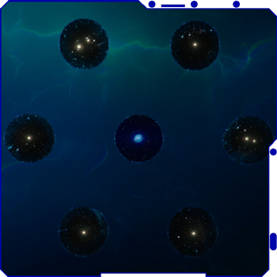

Thousands of years ago, an unknown advanced civilization discovers wormhole physics and uses this technology to build a massive interstellar network spanning across many star systems in the Milky Way. For whatever reason, they place the protomolecule in the asteroid Phoebe, and send it on a trajectory towards the prehistorical, primitive Earth. Fortunately for humankind, Phoebe is caught by Saturn's gravity, sparing Earth's primitive life from the protomolecule. Somehow this same advanced civilization is believed to have been destroyed by another advanced civilization for unknown reasons.
Fast forward to when humans have advanced to the level where they are capable of venturing out into space resulting in the colonization of Mars. Unfortunately, humankind has almost exhaused the Earth's resources in achieving this dream. Realizing the damage done to the Earth's ecosystem has reached critical levels, all nations on Earth focus their economies on the advancement of space travel. Eventually, the United Nations (UN) becomes the unified goverment of humanity and Mars, with a colony of dedicated scientists and explorers, pleads for independence. Tensions grow between Mars and the UN when Mars is denied independence.
Solomon Epstein, a Martial scientist, achieves a breakthrough regarding space propulsion and develops the Epstein Drive, a hyper-efficient fusion-powered engine. Using the Epstein Drive technology as abargaining chip, Mars exchanges it for their independence and proclaims itself as the Martian Congressional Republic (MCR). The United Nations and the MCR, both using the Epstein drive, colonize the remaining outer part of the solar system establishing outposts amongst many of the planets and moons.
Significant anatomical differences develop between Inners (UN and MCR) and Belters (humans who live amongst the many moons in the asteroid belt), due to growth in low gravity. Such differences also exist between Earthers and Martians, but are not as obvious. Over time, the Belters loosely form the Outer Planets Alliance (OPA) from the various factions within the asteroid belt and the moons of Jupiter and Saturn.
Tensions continue to grow between the UN, Mars, and the OPA as the differences between the powerful and oppressed become larger.